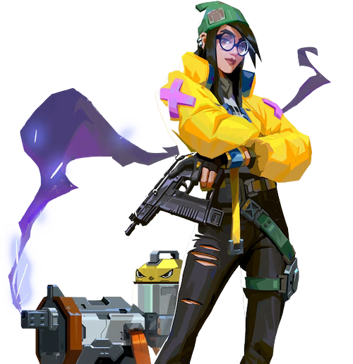

スプリットのマップ

情報・特徴
スプリットは、ミッドエリアが巨大な高台となって各所に昇降用のジップラインが設置されているギミック構造をしており、全体的に曲がり角や小道などの狭く入り組んだ通路で繋がれていることもあって交戦距離が近〜中距離になりやすく、角待ちによる不意打ちが発生しやすいのも大きな特徴です。
また、エリアごとに「地面の材質が大幅に変わる」マップでもあるため、フローリングの足音ならBタワー、鉄床の足音なら中央ベント、水音なら下水というように索敵アビリティを使わずとも耳だけで敵のポジションを割り出すことも可能なので意識しておくと良いでしょう。
全体マップ・マップの詳細
スプリットのおすすめ構成
スプリットは狭い通路と高低差が多い入り組んだ地形が特徴的なマップであり、遭遇戦や近距離戦が比較的発生しやすくなっています。特にAサイトとBサイトを繋ぐ接続点がミッドに集中しているため「セージ」の「バリアオーブ」による物理的なルート封鎖は戦局を大きく動かすことができ、攻守共に欠かせないキャラです。
また狭所が多いこともあって爆発系アビリティを持つ「レイズ」も非常に相性が良く、「ペイント弾」での角待ち対策やピークポイントへの「ショーストッパー」の決め撃ちなど攻撃性能を十全に発揮することができます。
| おすすめチーム構成 | ||||
|---|---|---|---|---|
 セージ |
 レイズ |
 オーメン |
 キルジョイ |
 スカイ |
スプリットの基本的な攻め方
Aサイト側の立ち回り
スプリットのAサイト側を攻める場合は、ピークやエントリーの起点となるAメイン・Aランプの2ヶ所を確保することが重要になります。AスクリーンやAタワーから射線を通してくる敵が多いため、ピーク・エントリーを行う前にその2ヶ所のピークポイントにスモークを設置して射線を塞いでおくことが必須です。
AランプからAタワーに侵入する場合は交戦距離が短くなる代わりに、チキンやロープなど角待ち・不意打ちに適したポジションが多いため、フラッシュアビリティを活用してクリアリングを行いつつAサイトを挟むように立ち回ると良いでしょう。
Aタワーのロープ手前で待機しておくだけで索敵が可能です。スプリットはエリアごとに地面の材質が大きく異なるため、Aサイトにスパイクを設置した後に「Aタワーのロープ手前」に待機して耳をすませておくことで、索敵アビリティがなくともリテイクを狙う敵の侵攻ルートを察知することができます。
Bサイト側の立ち回り
スプリットのBサイト側を攻める場合は、ピークやエントリーの起点となるBメインと挟撃を行うためのBタワーの2ヶ所を確保することが重要になります。エントリーする際はBラフターやBバックなどの遠距離から通すことができる射線をスモーク・スクリーンで塞ぎつつフラッシュを活用して一気に押し込む必要があります。
また、バトルフェーズ開始直後に防衛側が「オペレーター」などでBメインをピークしてくることも多いため、ピストルラウンド以外ではBメインに侵入する際もスモークやフラッシュで敵の射線を動かすように意識しておきましょう。
スプリットの基本的な守り方

Aサイト側の立ち回り
スプリットのAサイトを守る場合は、攻撃側のエントリーやピークの起点となるAメインを抑えることが重要です。AスクリーンやAランプからピークすることで敵の侵攻を抑えることができますが、Aランプからのピークに関しては、足止め系アビリティを所持していないとスモーク・フラッシュ・爆発系アビリティで簡単に押し込まれるため、無理をせずにAタワーからAメイン・Aランプの両方をカバーするようにポジションしておくのがおすすめです。
Bサイト側の立ち回り
スプリットのBサイトを守る場合は、基本的にBメインを抑えることに注力することが重要です。Bラフター・Bバックから射線を通しつつ、テトリスで角待ちを行うことができる防衛有利の構造をしているだけでなく、「オペレーター」を所持している場合はバトルフェーズ開始直後にBメインをピークしてファーストブラッドを狙うことも可能です。エイム力に自信があるのであれば積極的に活用すると良いでしょう。
Bサイトに侵攻してくる場合は同時に中央ボトムからも攻撃を仕掛けられることが多いので、Aサイト側で監視しているプレイヤーは中央ベントにローテートしてピークするのがおすすめです。